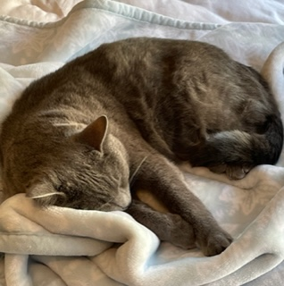
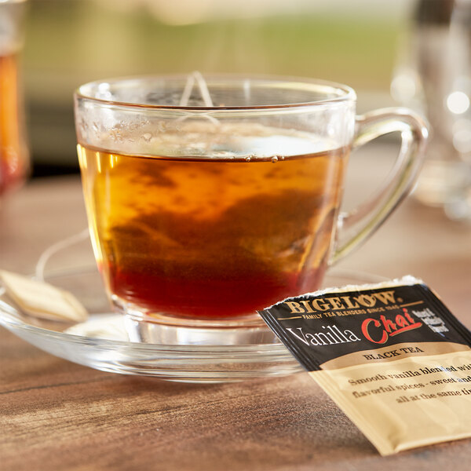
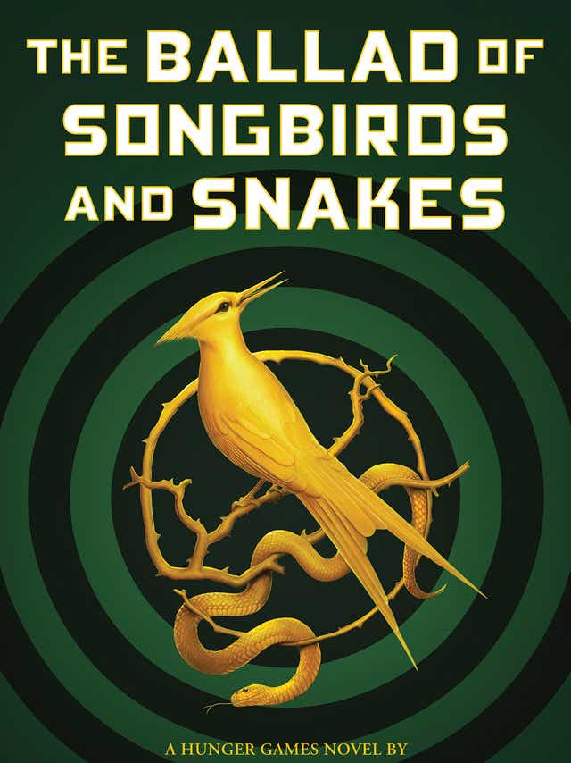
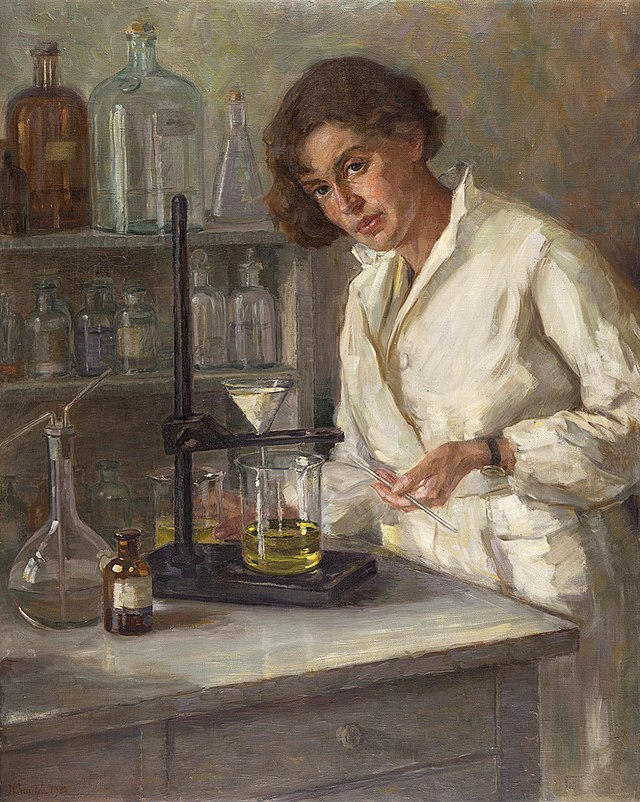
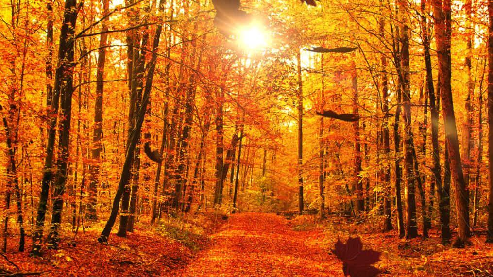

Hello, world! My name is Caelan.
This is a webpage all about me. My likes, dislikes, hopes, dreams, and favorite things.
I am a sophmore in high school, and my favorite subject is science. I live with my mom and dad, and my brother is a freshman in college. I love traveling with my family and hope to visit all fifty states. I listen to a lot of music and like to make art. I consider myself a dog person, although I also love cats. I have a 4-year old cat named Echo.
Biography
In my spare time I like to listen to music, hang out with friends, sleep, bake, and of course, play with my cat. My life goal is to travel the world.
My Favorite Quotation
"If you never did you should. These things are fun and fun is good." - Dr. Seuss
My Favorite Foods
- Ramen
- Ice Cream
- Tacos
- Fries
The Four Movies of My Favorite Series, Ranked
- Hunger Games: Catching Fire
- Hunger Games
- Mockingjay Part 1
- Mockingjay Part 2
Artist I Enjoy, And My Favorite Songs of Their's
- The Strokes
- At The Door
- Ode To The Met's
- Someday
- The Smiths
- This Charming Man
- There Is A Light That Never Goes Out
- Back To The Old House
- Silversun Pickups
- Panic Switch
- Substitution
- Lazy Eye
Other Favorite Things
| Favorite Color | Blue Green |  |
|---|---|---|
| Favorite Drink | Chai Tea |  |
| Favorite Book | "The Ballad of Songbirds and Snakes" by Suzanne Collins |  |
| Favorite Subject | Science |  |
| Favorite Sit-Com | New Girl |  |
| Favorite Season | Fall |  |
Contact Information
Email: lillianparcel@emailme.com
Phone: 123-456-7890